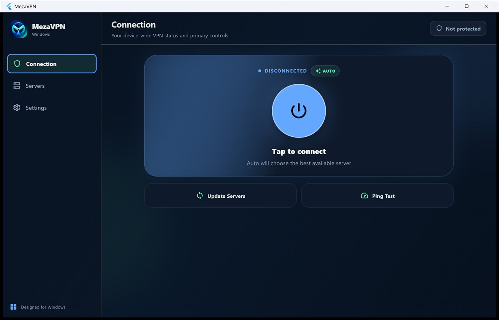

دانلود فیلترشکن ویندوز برای کامپیوتر: MezaVPN
MezaVPN برای ویندوز یک فیلترشکن و وی پی ان رایگان و Native برای کامپیوتر و لپتاپ است. با یک کلیک حالت Auto سرور مناسب را انتخاب میکند، یا از فهرست قابل جستوجو سرور دلخواه را برمیدارید. در System Tray کنار ساعت ویندوز میماند، نیازی به ثبتنام ندارد، تبلیغ ندارد و نصبکننده آفلاین آن همه چیز لازم را همراه دارد.

امکانات فیلترشکن ویندوز MezaVPN
- حالت خودکار و دستی با تلاشهای محدود برای اتصال؛ دیگر «در حال اتصال» بیپایان نمیبینید.
- وضعیت اتصال واقعی – «متصل» فقط بعد از تأیید دسترسی واقعی به اینترنت نمایش داده میشود.
- جستوجو و فیلتر سرورها – جستوجوی فارسی و انگلیسی، فیلتر سرورهای در دسترس و مرتبسازی بر اساس سرعت یا کشور.
- کنترل از System Tray، اجرای خودکار با ویندوز (اختیاری)، نمایش زنده ترافیک و ابزار عیبیابی.
- بازیابی خودکار بعد از Sleep، تغییر شبکه یا اتصال ناموفق.
- حفاظت از دادههای محلی – پروفایل سرورهای ذخیرهشده با رمزنگاری کاربر ویندوز محافظت میشوند.
- نصب و حذف تمیز – میانبر دسکتاپ و منوی Start، بهروزرسانی درجا و حذف کامل هنگام Uninstall.
کدام فایل را دانلود کنم؟
| کامپیوتر شما | فایل | حجم |
|---|---|---|
| بیشتر کامپیوترها (ویندوز ۶۴ بیتی) | MezaVPN-2.0.0-Windows-x64-Setup.exe | حدود ۳۹ مگابایت |
| ویندوز ۳۲ بیتی | MezaVPN-2.0.0-Windows-x86-Setup.exe | حدود ۲۷ مگابایت |
| بررسی اصالت فایل | MezaVPN-2.0.0-SHA256SUMS.txt | — |
مطمئن نیستید؟ مسیر Settings → System → About → System type را باز کنید؛ اگر «64-bit» نوشته بود، نسخه x64 را بگیرید.
آموزش نصب فیلترشکن روی ویندوز
- نصبکننده مناسب را از صفحه رسمی دانلود MezaVPN دریافت کنید.
- پیشنهادی: در PowerShell دستور
Get-FileHash .\MezaVPN-2.0.0-Windows-x64-Setup.exe -Algorithm SHA256را اجرا کنید و نتیجه را با فایل SHA256SUMS مقایسه کنید. - نصبکننده را اجرا و پیام UAC ویندوز را تأیید کنید. به دانلود هیچ پیشنیاز دیگری نیاز نیست.
- گزینه Launch MezaVPN را فعال بگذارید و سپس دکمه اتصال را بزنید.
درباره هشدار SmartScreen: نصبکنندههای نسخه 2.0.0 امضای دیجیتال ندارند، پس ویندوز ممکن است «Unknown publisher» یا «Windows protected your PC» نشان دهد. فقط برای فایلی که از صفحه رسمی دانلود و بررسی کردهاید، روی More info و بعد Run anyway بزنید.
پرسشهای متداول
آیا فیلترشکن ویندوز MezaVPN رایگان است؟
بله. رایگان است، به حساب کاربری نیاز ندارد و SDK تبلیغاتی ندارد.
نسخه x64 را دانلود کنم یا x86؟
بیشتر کامپیوترهای امروزی به x64 نیاز دارند. x86 فقط برای ویندوز ۳۲ بیتی است.
چرا ویندوز هنگام نصب هشدار میدهد؟
نصبکننده امضای دیجیتال Authenticode ندارد. فقط از صفحه رسمی دانلود کنید و قبل از اجرا checksum را بررسی کنید.
چطور MezaVPN را از ویندوز حذف کنم؟
از Settings → Apps. حذفکننده سرویس، فایلها، میانبرها، تنظیمات و دادههای MezaVPN را کامل پاک میکند.